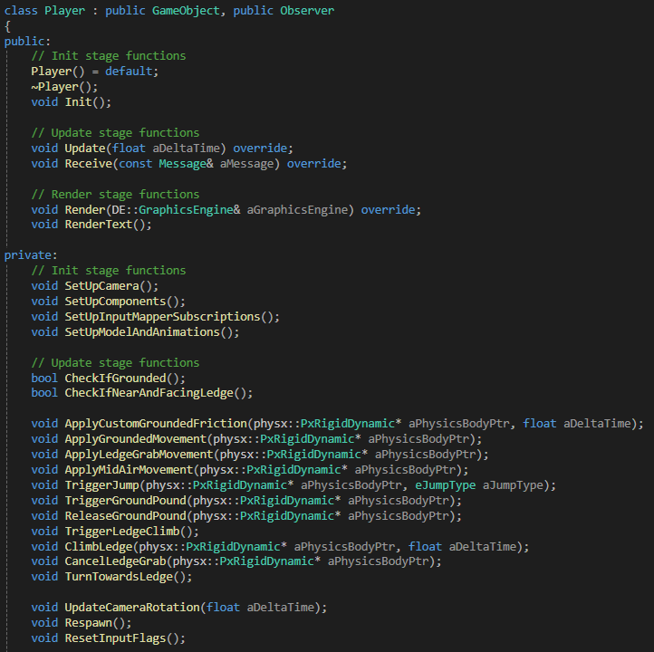
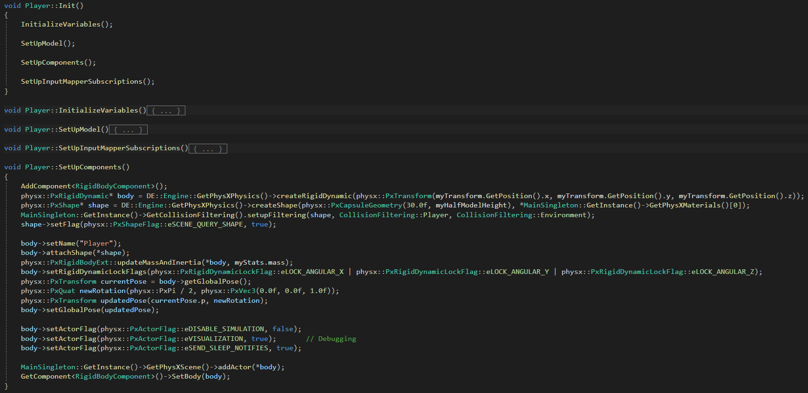
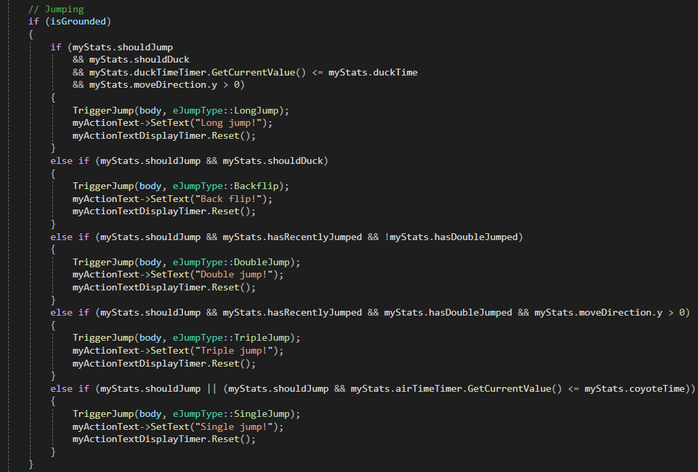
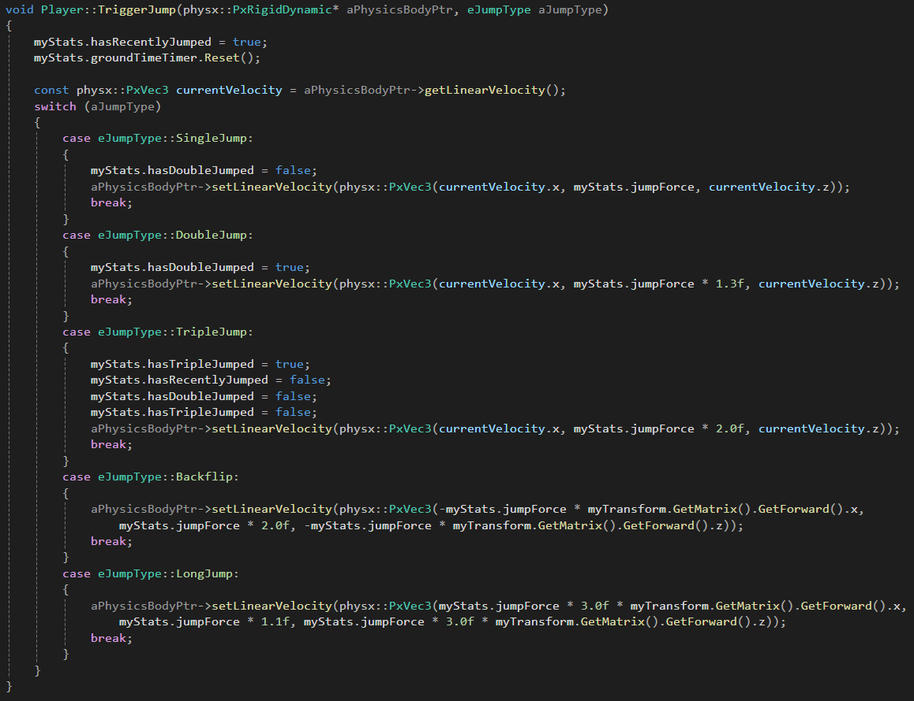
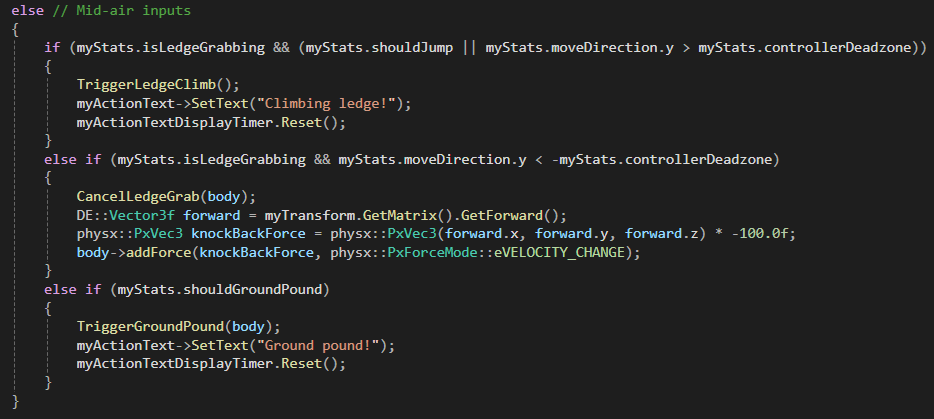
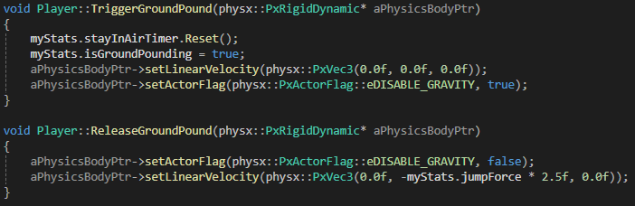
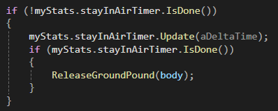
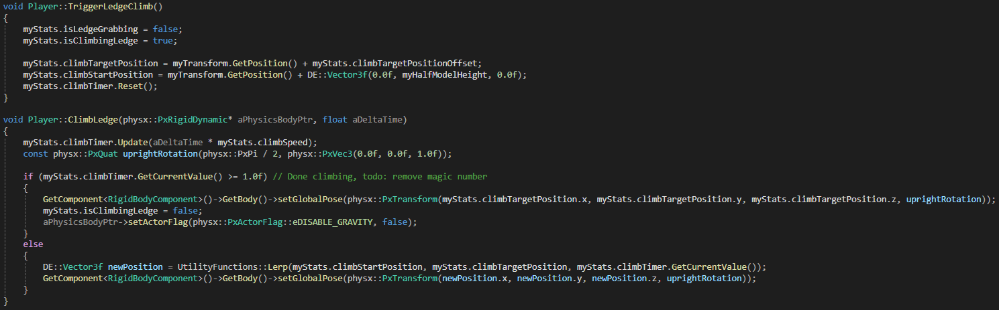
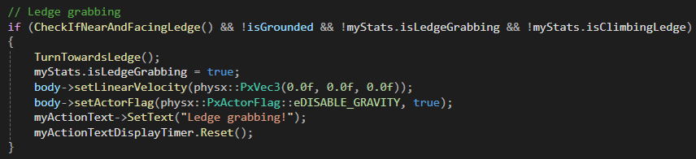
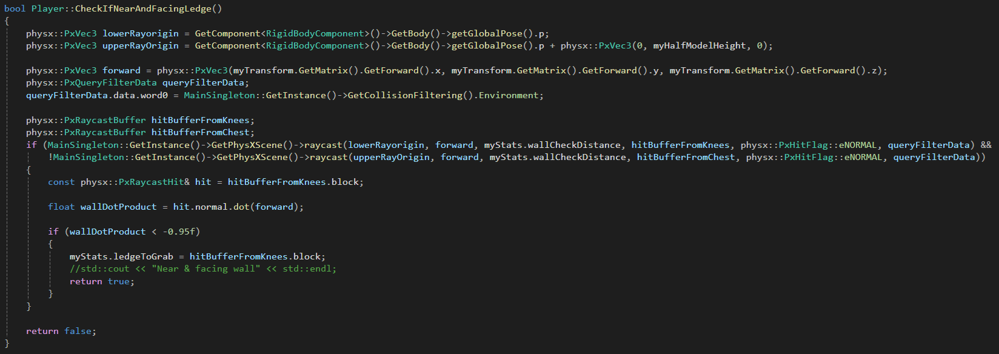

Super Mario 64 Character Controller

Introduction
I developed this project during the specialization course at The Game Assembly, where we create a focused programming project for our portfolios. I chose to make a 3D character controller for several reasons. First and foremost, I wanted to return to my roots — where my passion for games began: the Nintendo 64. Nothing has influenced my love for games more than those early days, playing Mario with my brother and childhood friends, with my mother translating clues as we searched for new stars. Those are some of my most cherished memories.
Technically, I had never created a 3D character controller outside of Unity, and I had limited experience with PhysX. This project became the perfect opportunity to both challenge myself and to build something deeply personal.
To keep the project within a realistic scope, I began by identifying which mechanics I definitely wanted to implement, which ones to cut entirely, and which would be considered “wish features” — features I’d love to include if time allowed.
Things I definitely wanted to implement:
- Controller-based movement utilising an inputmapper
- Single, double, and triple jump
- Back flip
- Duck
- Long jump
- Ground pound
Wish features:
- Ledge grab
- Ledge climb/drop off
- Ledge “traversal” (sideways movement whilst ledge grabbing, including falling off when the ledge ends)
I ended up having the time to implement all of this, with a good understanding of how I could further implement the rest of the Super Mario 64 character controller mechanics.
The controller was developed in our own game engine, Dream Engine, created by our project group.
Player Overview
An overview of the player class. The Observer inheritance is required for the inputmapper, Receive() is where all inputs are received.
PhysX Setup
This code sets up the physics body for the player character using NVIDIA PhysX. It creates a dynamic rigid body with a capsule shape, which is ideal for smooth character movement and to avoid catching on geometry edges. The capsule is configured with custom collision filtering so it only interacts with relevant layers, like the environment.
To ensure the capsule stands upright (since PhysX capsules are horizontal by default), I rotate it 90 degrees around the Z-axis. I also lock all angular motion to prevent the body from tipping over during simulation, keeping the player upright at all times.
Mass and inertia are automatically computed based on the configured mass, and the body is registered with the PhysX scene.
Finally, it's linked to the entity's RigidBodyComponent so that gameplay systems can interact with the physics representation.
Jumps
This is inside the player's Update function, where input flags along with other conditionals determine which jump should be triggered.
This is the TriggerJump function, where the jumps are done by manipulating the player's PxRigidDynamic. 
Ground Pound & Ledge Climb
This is also inside the player's Update function, just below the isGrounded check shown above, thereby checking for mid-air inputs instead.
This is the triggering and releasing of the Ground Pound, mimicking how Mario does a little somersault that momentarily locks him in place mid-air before slamming downwards.  
After ledge grabbing (shown further down), this is how I handled the climbing of ledges, which is triggered by doing forward or jump input whilst ledge grabbing. 
Ledge Grab
The contents of this GIF were all wish-features for my specialisation, and I'm pretty happy with how they turned out. Displayed is: ledge grabbing, letting go by doing backwards input, climbing up by doing forward or jump input, movement while ledgegrabbing (locked to right/left), and finally, falling off if the ledge ends.

Inside of the player's Update function, this is how the ledge grab is triggered. 
This is the CheckIfNearAndFacingLedge function, which is a prerequisite to ledge grab being triggered.  It works by shooting two rays, one from around knee-height and one from around chest-height. Should the upper one miss, and the lower one hit a surface that is near-enough facing the player directly (close to -1), the check returns true.